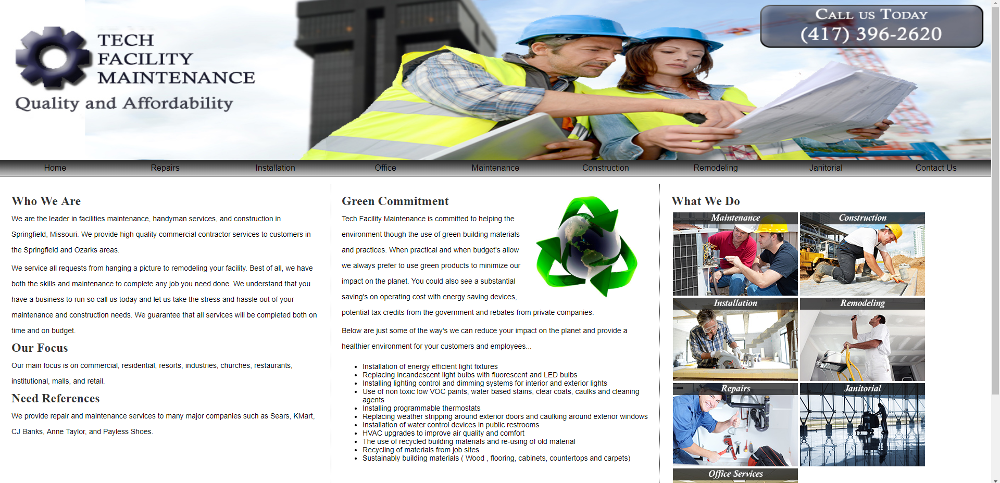

EDI/Warehouse Labeling System
Engineered, developed, and currently maintain in-house
software to transform ERP data into EDI format and transmit
that data to target intermediaries such as IBM Sterling. In
addition, the software generates custom labeling for each
customer based on the customer's specifications. Native
Windows application developed with C#/.NET Framework.

Designed, developed, and maintain the Miller Wood Supply
website to provide information about the company and
products. Web-based site developed with GoDaddy
Web+Marketing CMS.
Designed, developed, and maintain the Missouri Cybersecurity
Center of Excellence website to provide information about
the organization and its services. Web-based site developed
with GoDaddy Web+Marketing CMS.
Cloud ERP
Engineered and developed CloudERP, an in-house custom ERP to
manage customers, sales, vendors, purchasing, warehousing,
receiving, inventory, banking, financing, and other
functional business domains. 3-tier web application
developed with C#/ASP.NET Core/MSSQL Server.
Operations Software
Engineered and developed a custom web-based solution for a
non-profit to record, manage, and report on its operations
and handle day-to-day activity to achieve its mission.
3-tier web application originally developed in Java/MySQL
and later migrated to C#/ASP.NET/MSSQL for performance and
scalability.
Custom CMS
Engineered and developed a custom web-based CMS solution for
a non-profit to provide information about its organization
and services. In addition, the site provided the
organization with a back-end to create events for its
customers and handle payment processing. 3-tier web
application developed in C#/.NET/PostgreSQL.
Farrar and Associates
Designed and developed a web application that provided
customers with information about the organization and its
services. It also provided a customer backend where
customers were able to manage their account and process
payments. 3-tier web application developed with
C#/ASP.NET/MSSQL
New Creations Bookbinding
Designed and developed an e-commerce site that provided
customers with the ability to shop for and purchase products
from the organization. Also provided RBAC for the backend
that allowed customers to view and edit their accounts while
allowing administrators to add and manage products. 3-tier
web application developed using C#/.NET Framework/MSSQL
Farrar Technologies
Designed and developed a static website that provided
customers with information about the organization and its
services. Developed with HTML/CSS/JavaScript.
Enviro Janitorial Services
Designed and developed a static website that provided
customers with information about the organization and
services. Developed with HTML/CSS/JavaScript.
Kids Compassion
Designed and developed a static website that provided
customers with information about the organization and
services. Developed with HTML/CSS/JavaScript.
Meta-Games Unlimited
Designed and developed a static website that provided
customers with information about the organization and
products. Developed with HTML/CSS/JavaScript.
Tech Facility Maintenance
Designed and developed a static website that provided
customers with information about the organization and
services. Developed with HTML/CSS/JavaScript.

Steven Farrar Portfolio
Designed and developed a this static website that provided
customers with information about me and my skill. Developed
with HTML/CSS.